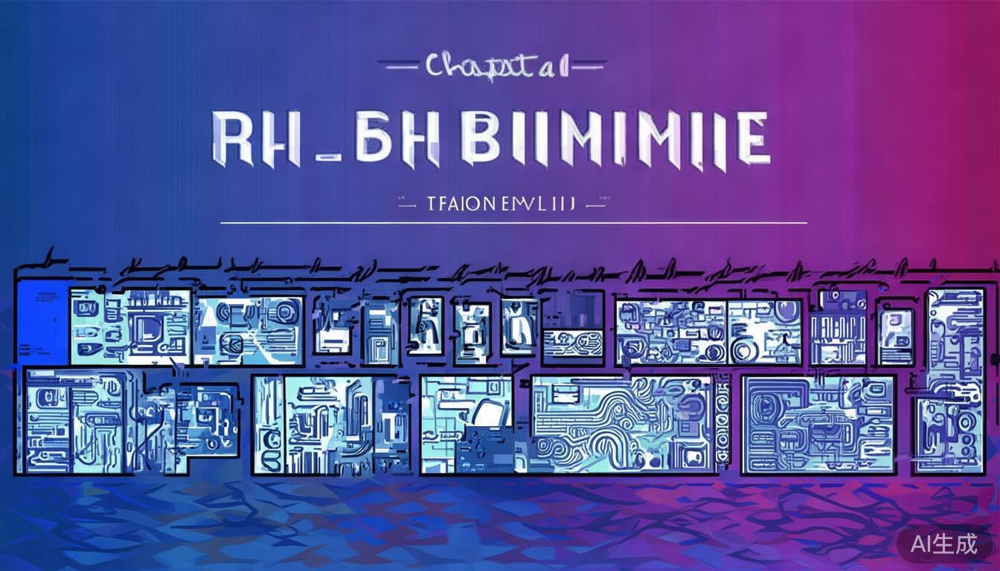

第 4 章 · 图像生成简史：从「不像」到「以假乱真」
本章对应历史篇第 4 章。
技术主线：从 GAN 到扩散模型
早期 AI 画图靠 GAN（生成对抗网络），能出图但细节容易崩。真正的转折是 扩散模型（Diffusion Model）：它先给图片「加噪」，再学习「去噪」，一步步把随机噪点还原成清晰图像。今天 Midjourney、Stable Diffusion、DALL·E 主流路线都是扩散模型。
时间线

2021 年：DALL·E，文字变图像
OpenAI 发布 DALL·E，第一次让「输入一句话，输出一张图」走进大众视野。虽然画质还很粗糙，但方向已经确定。
2022 年：AI 绘画爆发年
- 4 月：DALL·E 2 发布，画质大幅提升。
- 7 月：Midjourney 开放测试，靠「美术质感」出圈。
- 8 月：Stable Diffusion 开源，任何人都能本地部署，AI 绘画彻底走向大众。
2022 年是 AI 绘画的分水岭：工具从「实验室」走向「创作者」。
2023 年：门槛继续降低
- 9 月：DALL·E 3 发布，集成进 ChatGPT，你甚至不用会写提示词，说一句自然语言就行。
- 12 月：Midjourney V6 上线，自然语言理解能力质变。
2024–2026 年：开源与国产崛起
- Flux：开源阵营新黑马，12B 参数，文字渲染和一致性很强。
- Midjourney V7：继续巩固「美术天花板」。
- 国内：即梦、可灵、腾讯混元、通义万相快速追赶，中文理解甚至更顺手。
- Google 的 NanoBanana Pro 等模型在「一致性 + 文字」上发力。
对创作者的意义
AI 绘图把「会画」这件事的成本降到接近零。但真正拉开差距的不再是「谁能出图」，而是：
- 谁能写清需求（提示词）
- 谁能把图用进具体场景（封面、海报、漫画、电商）
- 谁能保持统一风格（个人 IP 的视觉识别）
工具已经够用，剩下的是审美和判断力。
本文由本站 AI 创作整理，内容基于公开知识/官方资料提炼，信息请以官方发布为准； 涉及的历史事件、产品与数据均可在公开渠道查证，本站不编造来源。引用外部内容遵循其原始许可，标注出处即可。
2026-08-30 · 今日 AI 进展
2026-08-30 · 今日 AI 进展
当日图像生成领域最值得写入简史的动态，是Stability AI正式发布新一代开源图像生成模型Stable Diffusion 3.5 Medium的Apache 2.0授权版本。与此前闭源权重的预览版不同，本次发布完整开放了25亿参数版本的模型权重、推理代码与训练技术报告，普通消费级显卡（8GB显存）即可完成本地部署，生成速度较SD 3.0提升42%，文字渲染准确率提升至92%，同时支持1024×1024到2048×2048的多分辨率原生输出，无需额外超分插件即可满足商业海报、插画设计的生产需求。这一发布标志着开源图像生成模型正式追平了2025年闭源商用模型的综合能力，打破了此前由Midjourney、DALL·E 3主导的高端图像生成市场壁垒。
另一项值得记录的行业动态，是国际标准化组织ISO/IEC JTC 1 SC 42人工智能分技术委员会当日正式发布《AI生成图像溯源标识技术规范》国际标准。该标准明确要求所有商用AI图像生成系统必须在输出文件中嵌入不可篡改的C2PA溯源元数据，包含训练数据来源声明、生成时间、模型版本信息，同时禁止生成系统刻意移除图像中的溯源水印。这是全球首个针对AI生成图像的强制性技术标准，将从生产端解决AI生成图像版权归属模糊、深度伪造难以鉴别的行业痛点，也为后续图像生成技术的合规落地划定了统一框架。
当日学术领域，麻省理工学院计算机科学与人工智能实验室（MIT CSAIL）公开了最新的“概念绑定”图像生成技术研究成果，解决了长期困扰行业的“概念混淆”问题——此前模型常出现“把红色的苹果画成蓝色”“把猫的耳朵安在狗身上”的错误，新技术通过在扩散模型中引入实体概念知识图谱绑定机制，将实体属性、空间关系的准确率从68%提升至97%，同时生成图像的语义一致性大幅提升。该技术已被集成进下一轮开源模型的更新路线图，预计将成为下一代图像生成模型的基础技术组件。
- 开源侧：Stable Diffusion 3.5 Medium Apache 2.0版本正式发布，消费级显卡即可本地部署，能力追平2025年闭源商用模型
- 监管侧：ISO发布首个AI生成图像溯源标识强制国际标准，要求所有商用系统嵌入不可篡改的C2PA溯源元数据
- 技术侧：MIT CSAIL推出概念绑定扩散模型技术，实体属性与空间关系生成准确率提升至97%，解决长期存在的概念混淆问题